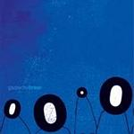

| Artist: | Gazpacho |
| Title: | Bravo |
| Label: | Independent |
| Length(s): | 57 minutes |
| Year(s) of release: | 2003 |
| Month of review: | [09/2003] |
| 1) | Desert | 5.30 |
| 2) | Sea Of Tranquility | 5.04 |
| 3) | Nemo | 3.56 |
| 4) | Ghost | 5.27 |
| 5) | California | 3.49 |
| 6) | The Secret | 5.38 |
| 7) | Sun God | 4.28 |
| 8) | Mesmer | 5.44 |
| 9) | Novgorod | 5.06 |
| 10) | Ease Your Mind | 5.58 |
| 11) | Bravo | 6.37 |
Nemo features acoustic guitar during the verses, replaced by electric guitar during the choruses. Jan Ohme shows that his voice is not just fit for melancholic material, but can perform also in more rocky songs. Still, the track appears a bit more superficial than others.
Ghost is defined by a rather catchy piano riff, helping finding a balance between the more poppy and melancholy, making this still light enough but with some nice melody lines. The instrumental rockier bridge is almost disjoint from the rest of the track, but without irritating. Still, one wonders about its purpose.
California is pretty poprocky. The organ used in the back at times is nice, and the track does build on towards a climax, but fails to gain in depth. The light organ al through the track and especially in the solo is pretty nice. The Secret is strong on acoustic guitar, although electric guitar and synths help build towards a climax as the track progresses. After its rather rocky predecessor, this track is more indepth. The break brings on violin and other traditional instruments, adding a bit of gypsy and general differentness, which continues towards the end.
Sun God is carried by the vocals, with once again laidback and with melancholy in synth and guitar. The bridge shuts of the guitar, opening up to intimacy even more.
The vocals in Mesmer are distant (without being soft in volume) and cold, almost sounding as if vocoded. The guitar, hollow percussion and echoy synths help maintain this distant feel.
Novgorod has the addition of female vocals, initially alternating with the male vocals (some might call this a duet), but later solo. Even though there is something still of the melancholy of previous tracks, the female vocals do give the track a different feel, as does the 'dadada' in the back, sounding vocally like a softsung Toyah or Dalbello.
Ease Your Mind has a bridge with synth squirming around percussion, following the soft sung and slowly shifting start, later assisted by vocals in reaching a climax, which is pre-empted by returning to the song's theme, which in itself is rather worthwhile too. And then ends up building towards a climax once again.
Closer Bravo starts out lazily. Ohme is sort of dueting with himself in the track, seemingly singing from different spatial positions. The piano roll is a bit like the one in Ghost, although very unlike at the same time (yes, I do strive to make sense), less haunting, more laidback. As the track progresses Ohme's vocals sometimes are more drawn out, less subdued, and by becoming so, one notices how subdued the vocals most of the time are. The flute and strings give the track a sudden medieval feel towards the end. Unexpected, but not less nice for that.